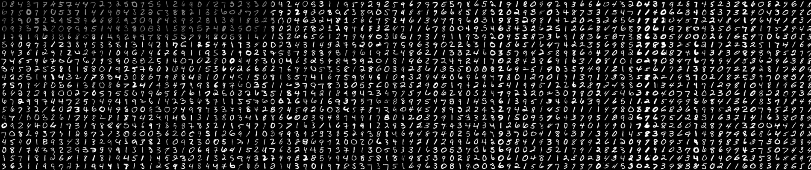
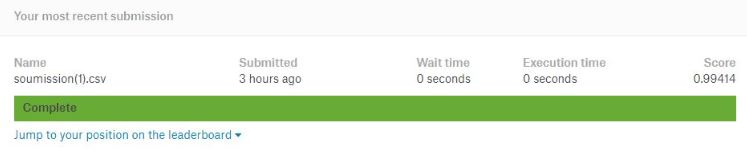

Classification d'image
Nous allons créer un réseau de neurones convolutif sur le célèbre jeu de données MNIST. Pour ce faire, nous avons créé un notebook python sur Google Colab. Les données sont disponibles sur Kaggle, elles ont été importées via l'API de Kaggle.
Importation des librairies
import numpy as np
import pandas as pd
import matplotlib.pyplot as plt
import os
from PIL import Image
Importation des données
Pour importer les données, nous utilisons l'API de Kaggle.
!pip install kaggle
!mkdir .kaggle
import json
token = {"username":"#######","key":"############"}
with open('/content/.kaggle/kaggle.json', 'w') as file:
json.dump(token, file)
!chmod 600 /content/.kaggle/kaggle.json
!cp /content/.kaggle/kaggle.json ~/.kaggle/kaggle.json
!cp /content/.kaggle/kaggle.json ~/root/.kaggle/kaggle.json
!kaggle config set -n path -v{/content}
!mkdir data
!kaggle competitions download -c digit-recognizer -p /content/data/
Recodage des données
Les valeurs des pixels ainsi que les labels des images sont stockés dans un fichier CSV. Nous allons dans un premier temps séparer les labels et les valeures de pixels. Nous allons ensuite transformer les labels en vecteur de taille 10. Puis les images seront redimentionnées en (28×28×1) puis stockées dans un vecteur
df = pd.read_csv('/content/data/train.csv')
targets = np.array(df['label'])
onehot_encoder = OneHotEncoder(sparse=False)
targets = onehot_encoder.fit_transform(targets.reshape(len(targets), 1))
features = []
for i in range(0,len(df)):
features.append(np.array(df.iloc[i,1:]).reshape(28,28,1))
features = np.array(features)
print("Taille des features =",features.shape)
print("Taille des targets =",targets.shape)

Echantillonnage
from sklearn.model_selection import train_test_split
x_train, x_valid, y_train, y_valid = train_test_split(features, targets, test_size=0.1, random_state=123)
print("x_train =",x_train.shape," | y_train =",y_train.shape)
print("x_valid =",x_valid.shape," | y_valid =",y_valid.shape)

Visualisation
index = np.arange(len(features))
np.random.shuffle(index)
features = features[index]
targets = targets[index]
fig = plt.figure(figsize=(10,10))
plt.gcf().subplots_adjust( wspace = 0, hspace = 0.2)
for i in range(1,401):
plt.subplot(20, 20, i)
img = plt.imshow(features[i].reshape(28,28))
img.axes.get_xaxis().set_visible(False)
img.axes.get_yaxis().set_visible(False)
plt.show()

Création du modèle
Nous utilisons la librairie Keras pour créer notre modèle convolutif
from keras.models import Sequential
from keras.layers import Conv2D, MaxPooling2D, Dropout, Flatten, Dense, Activation, BatchNormalization
from keras import optimizers
model = Sequential()
model.add(Conv2D(64, (3, 3),padding = 'same', activation='relu', input_shape=(28, 28, 1)))
model.add(BatchNormalization())
model.add(Conv2D(64, (3, 3),padding = 'same', activation='relu'))
model.add(BatchNormalization())
model.add(MaxPooling2D(pool_size=(2, 2)))
model.add(Dropout(0.5))
model.add(Conv2D(128, (3, 3),padding = 'same', activation='relu'))
model.add(BatchNormalization())
model.add(Conv2D(128, (3, 3),padding = 'same', activation='relu'))
model.add(BatchNormalization())
model.add(MaxPooling2D(pool_size=(2, 2)))
model.add(Dropout(0.5))
model.add(Conv2D(256, (3, 3),padding = 'same', activation='relu'))
model.add(BatchNormalization())
model.add(Conv2D(256, (3, 3),padding = 'same', activation='relu'))
model.add(BatchNormalization())
model.add(MaxPooling2D(pool_size=(2, 2)))
model.add(Dropout(0.5))
model.add(Conv2D(512, (3, 3),padding = 'same', activation='relu'))
model.add(BatchNormalization())
model.add(Conv2D(512, (3, 3),padding = 'same', activation='relu'))
model.add(BatchNormalization())
model.add(Conv2D(512, (3, 3),padding = 'same', activation='relu'))
model.add(BatchNormalization())
model.add(MaxPooling2D(pool_size=(2, 2)))
model.add(Dropout(0.5))
model.add(Flatten())
model.add(Dense(256, activation='relu'))
model.add(BatchNormalization())
model.add(Dropout(0.70))
model.add(Dense(10, activation='softmax'))
optimiser = optimizers.RMSprop(lr=0.001, rho=0.9, epsilon=None, decay=0.0)
model.compile(loss='categorical_crossentropy', optimizer=optimiser, metrics=['accuracy'])
model.summary()
_________________________________________________________________
Layer (type) Output Shape Param #
=================================================================
conv2d_16 (Conv2D) (None, 28, 28, 64) 640
_________________________________________________________________
batch_normalization_19 (Batc (None, 28, 28, 64) 256
_________________________________________________________________
conv2d_17 (Conv2D) (None, 28, 28, 64) 36928
_________________________________________________________________
batch_normalization_20 (Batc (None, 28, 28, 64) 256
_________________________________________________________________
max_pooling2d_12 (MaxPooling (None, 14, 14, 64) 0
_________________________________________________________________
dropout_14 (Dropout) (None, 14, 14, 64) 0
_________________________________________________________________
conv2d_18 (Conv2D) (None, 14, 14, 128) 73856
_________________________________________________________________
batch_normalization_21 (Batc (None, 14, 14, 128) 512
_________________________________________________________________
conv2d_19 (Conv2D) (None, 14, 14, 128) 147584
_________________________________________________________________
batch_normalization_22 (Batc (None, 14, 14, 128) 512
_________________________________________________________________
max_pooling2d_13 (MaxPooling (None, 7, 7, 128) 0
_________________________________________________________________
dropout_15 (Dropout) (None, 7, 7, 128) 0
_________________________________________________________________
conv2d_20 (Conv2D) (None, 7, 7, 256) 295168
_________________________________________________________________
batch_normalization_23 (Batc (None, 7, 7, 256) 1024
_________________________________________________________________
conv2d_21 (Conv2D) (None, 7, 7, 256) 590080
_________________________________________________________________
batch_normalization_24 (Batc (None, 7, 7, 256) 1024
_________________________________________________________________
max_pooling2d_14 (MaxPooling (None, 3, 3, 256) 0
_________________________________________________________________
dropout_16 (Dropout) (None, 3, 3, 256) 0
_________________________________________________________________
conv2d_22 (Conv2D) (None, 3, 3, 512) 1180160
_________________________________________________________________
batch_normalization_25 (Batc (None, 3, 3, 512) 2048
_________________________________________________________________
conv2d_23 (Conv2D) (None, 3, 3, 512) 2359808
_________________________________________________________________
batch_normalization_26 (Batc (None, 3, 3, 512) 2048
_________________________________________________________________
conv2d_24 (Conv2D) (None, 3, 3, 512) 2359808
_________________________________________________________________
batch_normalization_27 (Batc (None, 3, 3, 512) 2048
_________________________________________________________________
max_pooling2d_15 (MaxPooling (None, 1, 1, 512) 0
_________________________________________________________________
dropout_17 (Dropout) (None, 1, 1, 512) 0
_________________________________________________________________
flatten_4 (Flatten) (None, 512) 0
_________________________________________________________________
dense_7 (Dense) (None, 256) 131328
_________________________________________________________________
batch_normalization_28 (Batc (None, 256) 1024
_________________________________________________________________
dropout_18 (Dropout) (None, 256) 0
_________________________________________________________________
dense_8 (Dense) (None, 10) 2570
=================================================================
Total params: 7,188,682
Trainable params: 7,183,306
Non-trainable params: 5,376
_________________________________________________________________
Entraînement du modèle
Nous allons maintenant entraîner notre modèle
model.fit(x=x_train,
y=y_train,
batch_size=200,
epochs=100,
verbose=1,
validation_data=(x_valid,y_valid),
shuffle=True)
Visualisation des résultats sur l'échantillon de validation
Nous allons maintenant vérifier les erreurs que fait notre réseau de convolution sur l'échantillon de validation. Pour cela nous allons extraire les erreurs puis les afficher.
predict = model.predict(x_valid)
predict = np.argmax(predict,1)
label = np.argmax(y_valid,1)
acc = np.equal(predict,label)
acc = acc.astype(float)
result = []
for i in range(0,len(predict)):
result.append([predict[i],label[i],acc[i],i])
df_result = pd.DataFrame(result)
df_result.columns=["predict","label","as_predict","id_img"]
is_False = x_valid[np.array(df_result.loc[df_result["as_predict"]==0,['id_img']])]
predict = np.array(df_result.loc[df_result["as_predict"]==0,['predict']])
label = np.array(df_result.loc[df_result["as_predict"]==0,['label']])
fig = plt.figure(figsize=(15,15))
plt.gcf().subplots_adjust(hspace = 0.3)
for i in range(0,len(is_False)):
plt.subplot(int(round(np.sqrt(len(is_False)))+1), int(round(np.sqrt(len(is_False)))), i+1)
img = plt.imshow(is_False[i].reshape(28,28))
img.axes.get_xaxis().set_visible(False)
img.axes.get_yaxis().set_visible(False)
plt.title(("predict = " + str(predict[i][0]) + " | label = " + str(label[i][0])))
plt.show()

Application sur l'échantillon de test
Nous allons maintenant appliquer le modèle sur l'échantillon de test et faire une soumission sur Kaggle. Nous allons d'abord importer le fichier csv contenant les valeurs de pixels, puis nous allons les redimensionner pour les stocker dans un vecteur.
df = pd.read_csv('/content/data/test.csv')
features = []
for i in range(0,len(df)):
features.append(np.array(df.iloc[i,:]).reshape(28,28,1))
features = np.array(features)
print("Taille de l'enchantillon de validation =",features.shape)

Nous allons maintenant appliquer le modèle à notre vecteur features. Et mettre en forme la table de soumission.
predict = model.predict(features)
result = []
for i in range(0,len(predict)):
result.append([i+1,str(np.argmax(predict,1)[i])])
df = pd.DataFrame(result)
df.column = ["ImageId","Label"]
df.head()

Nous avons ensuite soumis notre prédiction sur Kaggle.
